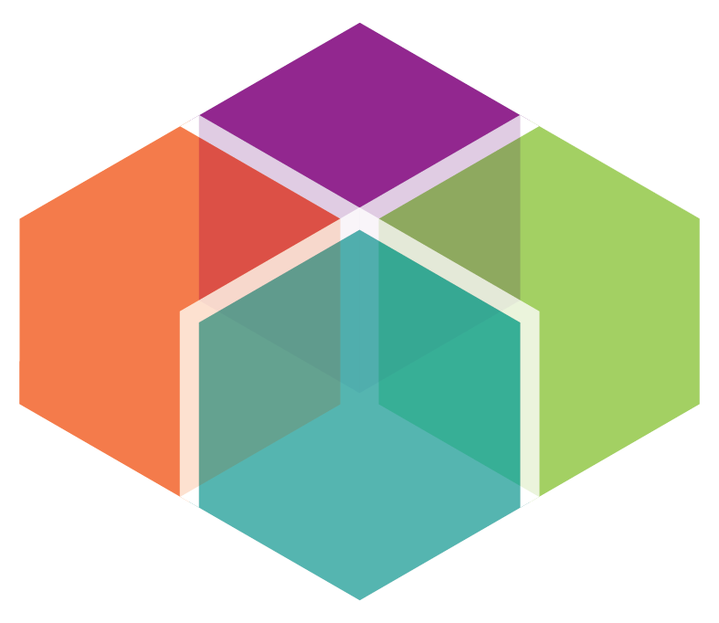

Working at Home in the Puget Sound
Work at Home Overall
Demographics
Geography
Travel Patterns
Always at Home Worker Share (2023)
12%
Working At Home Share Trend
Expand
Hybrid Worker Share (2023)
25%
Working At Home Patterns Trend
Expand